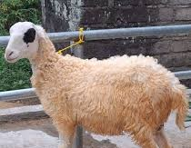
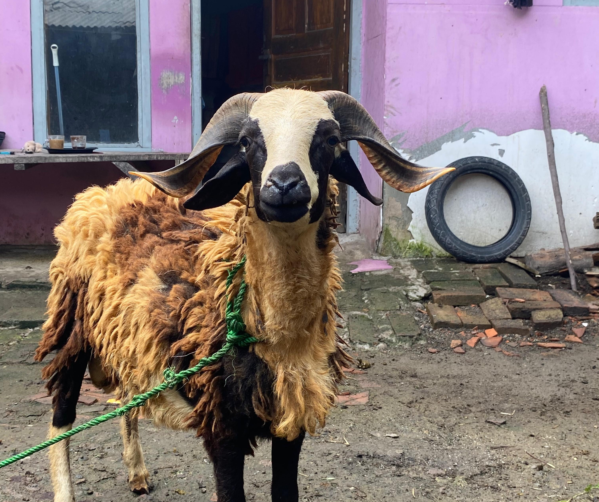
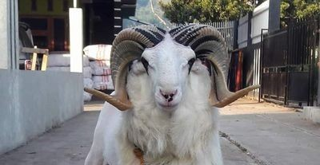
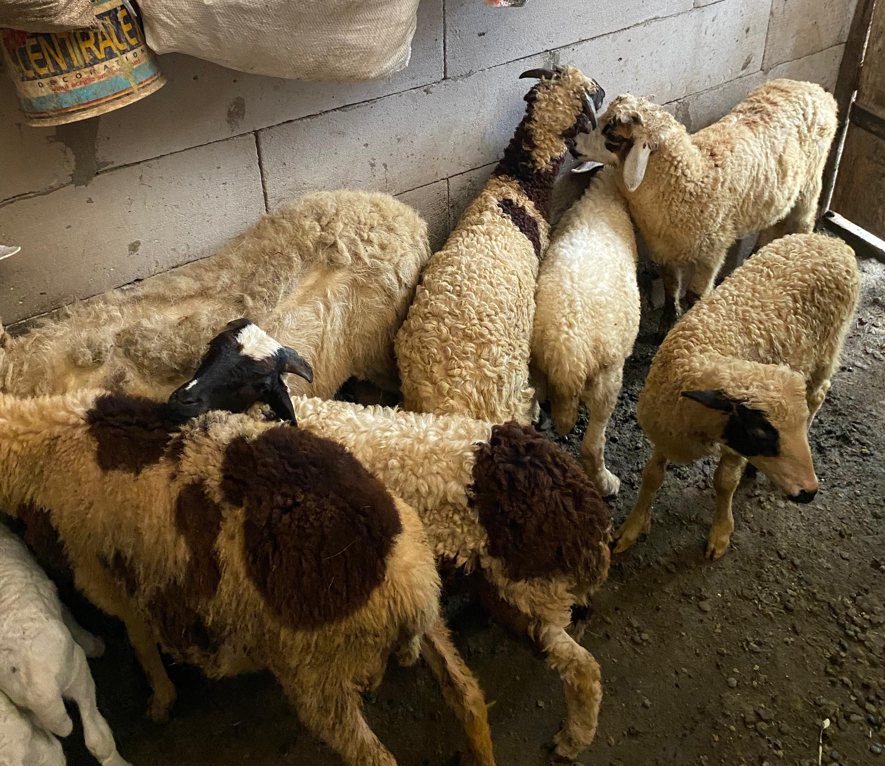

Biang garut
Biang anak domba garut sehat, unggulan, dan siap berkembang. Cocok untuk peternak yang ingin mulai dengan kualitas terbaik.
Harga: Rp 2.000.000-3.500.000/ ekor
Stok: 155 ekor
Kualitas: Premium
⭐️⭐️⭐️⭐️⭐️ (4.9/5)

domba Penjantan biasa
kami juga menjual penjantan yang siap untuk aqiqah atau buat pacek juga.
Harga: Rp3.000.000- 4.500.000 / ekor
Stok: 189 ekor
Kualitas: Super Premium
⭐️⭐️⭐️⭐️⭐️ (4.9/5)

Domba Garut Dewasa
Domba Garut dewasa asli, siap ternak dan berkualitas tinggi, memiliki daya tahan dan produktivitas yang bagus.
Harga: Rp5.000.000-8.000.000 / ekor
Stok: 128 ekor
Kualitas: Premium
⭐️⭐️⭐️⭐️⭐️ (4.9/5)

Bahan
Anakan domba sehat dan aktif, hasil pemuliaan unggulan siap untuk dikembangbiakkan.
Harga: Rp900.000-1.500.000 / ekor
Stok: 280 ekor
Kualitas: Premium
⭐️⭐️⭐️⭐️⭐️ (4.9/5)
10 Alasan Pilih Dewan Farm
- Domba sehat dan bersertifikat
- Harga bersaing dan transparan
- Tersedia untuk Qurban dan Aqiqah
- Kualitas Premium, Super, dan Ekonomis
- Pengiriman cepat dan aman
- Lokasi strategis di Karawang
- Konsultasi gratis sebelum beli
- Garansi tukar jika tidak sehat*
- Pembayaran lengkap: Cash, Transfer, QRIS
- Sudah dipercaya puluhan pelanggan
Garansi Dewan Farm
- Domba sehat saat pengiriman
- Penggantian jika sakit dalam 10 hari
- Gratis konsultasi peternakan
- Garansi genetik unggul
- Proses pembelian mudah dan cepat
- Gratis pengiriman untuk pembelian 20 ekor ke atas untuk di luar karawang
- Garansi uang kembali jika tidak puas dengan barang kami
- Dukungan purna jual selama masa ternak
- Kualitas sesuai deskripsi
- Pelayanan ramah dan profesional
Kelebihan Dewan Farm
- Domba langsung dari peternak, bukan tengkulak
- Dokumentasi domba sebelum dikirim
- Bisa pilih domba via video call
- Garansi sehat 7 hari
Testimoni Pembeli
Andi
★★★★★
Domba yang saya beli sangat sehat dan kualitasnya bagus. Sangat puas!
Sari
★★★★☆
Pengiriman cepat dan domba sesuai deskripsi. Recommended!
Budi
★★★★★
Pelayanan ramah dan domba sehat. Terima kasih Dewan Farm!
Lina
★★★★☆
Kualitas domba terjamin dan harga bersahabat.
Eko
★★★★★
Domba sehat, stok selalu tersedia. Puas banget!
Apa Kata Mereka?
Budi Santoso
★★★★★
Domba yang saya beli dari Dewan Farm sangat sehat dan cepat berkembang. Sangat puas!
Siti Aminah
★★★★☆
Pelayanan ramah dan pengiriman tepat waktu. Dombanya juga berkualitas tinggi.
Ahmad Fauzi
★★★★★
Harga sesuai dengan kualitas. Saya rekomendasikan Dewan Farm untuk peternak baru.
Ratna Dewi
★★★★★
Domba anakan yang saya beli tumbuh dengan baik. Terima kasih Dewan Farm!
Joko Widodo
★★★★☆
Gratis ongkir sangat membantu. Pelayanan dan kualitas nomor satu.
Lia Marlina
★★★★★
Dewan Farm sangat profesional. Saya puas dengan hasil ternak saya.
Agus Santoso
★★★★★
Domba sehat, pengiriman cepat, harga masuk akal. Recommended!
Maya Sari
★★★★☆
Pengalaman belanja yang menyenangkan. Kontak WA cepat dibalas.
Rizal Hakim
★★★★★
Anakan domba berkualitas yang sangat cepat tumbuh. Terima kasih Dewan Farm!
Dewi Lestari
★★★★★
Sangat puas dengan pelayanan dan kualitas domba di Dewan Farm.